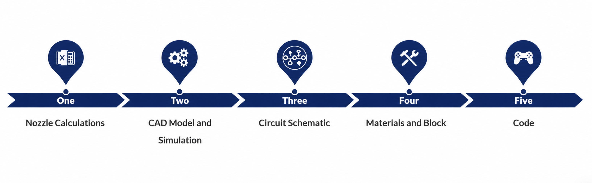
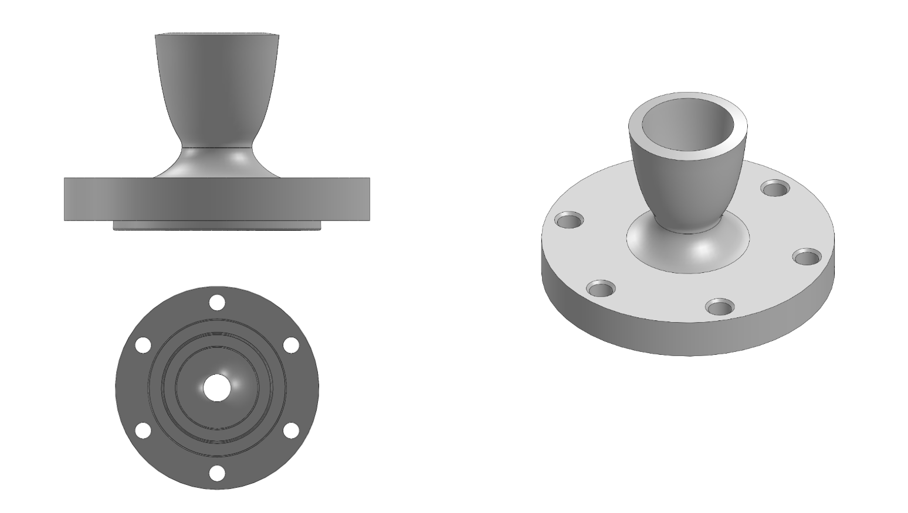
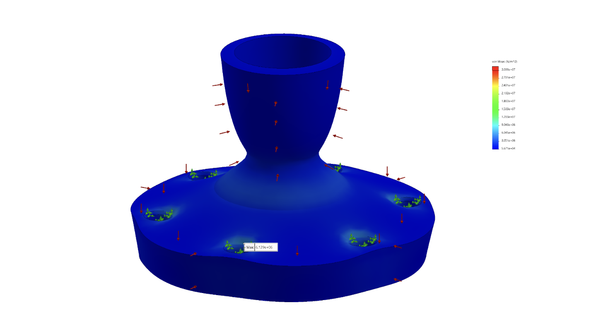
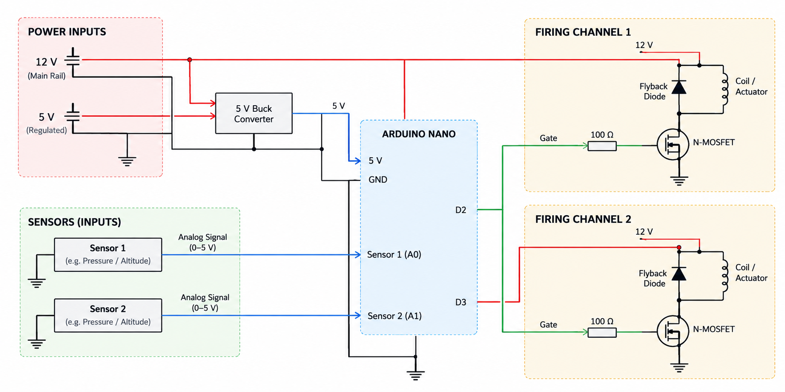
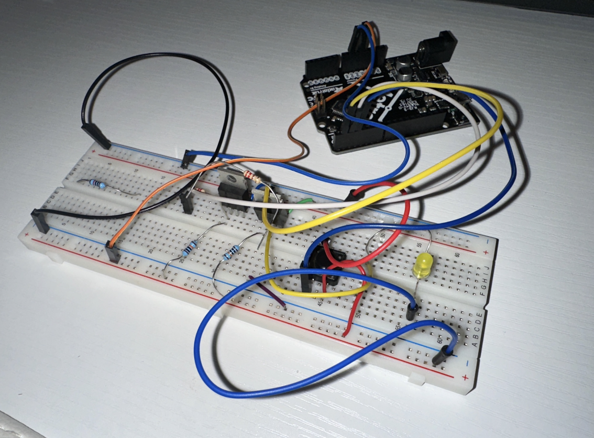
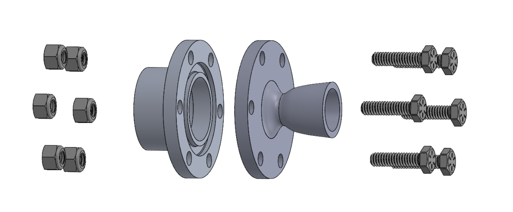
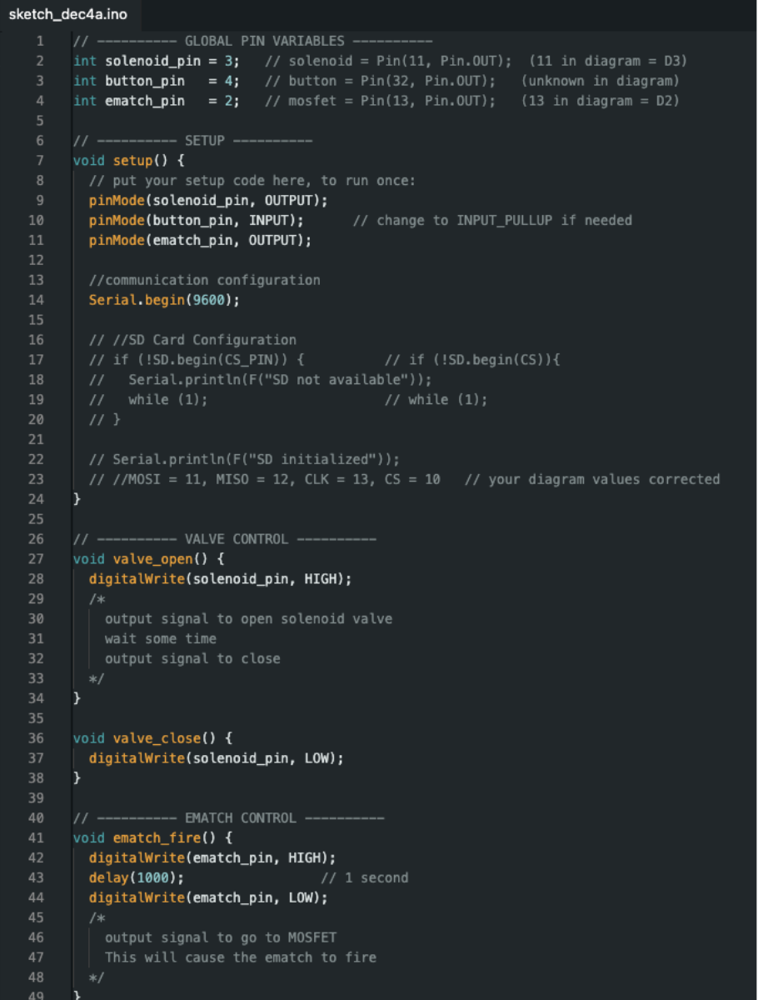
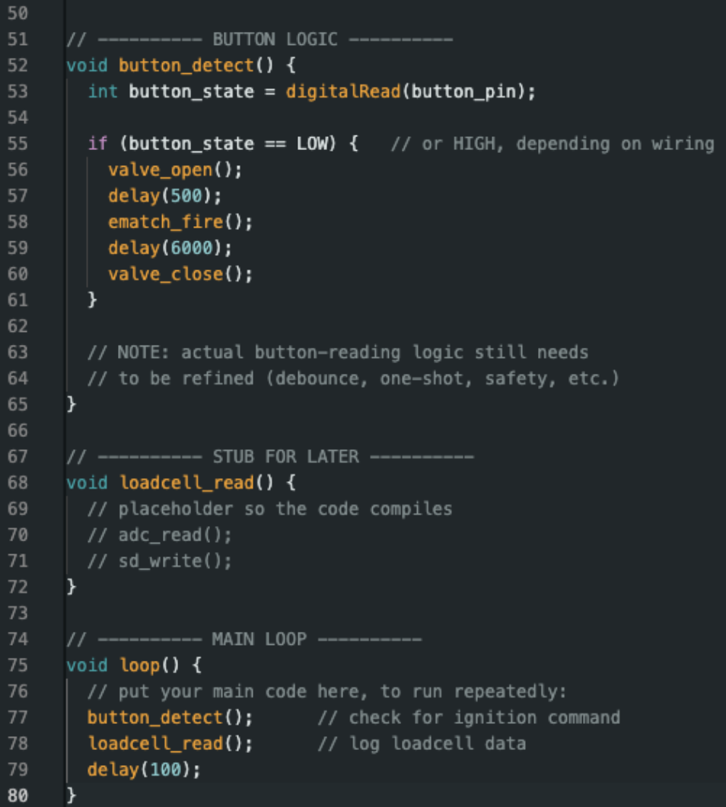

AEROSPACE / ELECTRICAL ENGINEERING / TEAM PROJECT
Nozzle Firing System
Rocket Propulsion Testing & Electronic Control
Rocket Nozzle Firing System
Arduino, CAD, Circuit Design
Electronics, Mechanical Design, Testing
01 / OVERVIEW
Project Overview
This project involved developing a rocket nozzle firing system by integrating propulsion calculations, CAD modeling, circuit design, and Arduino programming. The objective was to develop a functional system for rocket propulsion testing.

02 / NOZZLE CALCULATIONS
Calculating Nozzle Parameters
Propulsion calculations were performed to determine important nozzle parameters, including specific impulse, thrust, mass flow rate, throat diameter, exit diameter, and nozzle length. These calculations provided the theoretical foundation for the nozzle's geometry and CAD design.
03 / CAD MODELING
From Calculations to CAD
Using the calculated nozzle dimensions, a 3D CAD model was developed to visualize the nozzle geometry and evaluate the design before fabrication.

04 / SIMULATION
Nozzle Design Simulation
Simulation was used to evaluate the nozzle design and visualize its expected performance. This stage helped connect theoretical calculations with the modeled nozzle geometry.

05 / ELECTRICAL DESIGN
Designing the Control Circuit
The electrical system incorporated an Arduino microcontroller, MOSFETs, a solenoid, an E-match, and sensor components. An HX711 load cell converter and SD card reader were also included to support measurement and data recording. A circuit schematic was developed to organize the electrical connections before assembly.

06 / COMPONENT SELECTION
Electrical Components
The system integrated electronic control, switching, sensing, and data acquisition components.
07 / HARDWARE ASSEMBLY
Building the Circuit
Following the circuit design, the electronic components were assembled into a physical circuit. This stage involved translating the schematic into hardware and integrating the components required for system operation.

08 / MECHANICAL DESIGN
Mechanical Assembly
An exploded CAD assembly was created to illustrate the arrangement of the mechanical components. The assembly helped visualize how the individual parts fit together within the complete system.

09 / PROGRAMMING
Arduino Programming
Arduino programming was used to coordinate the electronic components and support system control. The software incorporated hardware interfacing, sensor measurements, and data acquisition.


10 / SYSTEM TESTING
Nozzle Firing Test
The final stage involved integrating the electrical and mechanical systems for testing. The firing test demonstrated the operation of the assembled system.